Claudio Javier de la Cruz
Claudio Javier de la Cruz viajó en solitario durante varios meses de 2013 por gran parte del sudeste asiático. En Malapascua vivió durante dos semanas, y las fotos que verás a continuación son de su estancia allí.
🖋️ Trayectoria y Pasiones
Desde 2008, el submarinismo es una de sus pasiones. Con cerca de 150 inmersiones, ha buceado en el Mediterráneo, las Islas Canarias, México, Cuba, Tailandia, Filipinas, Malasia, Indonesia, Maldivas y el mar Rojo.
Su estancia en la isla de Malapascua no solo le permitió explorar sus fondos marinos, sino que también sirvió de inspiración para su obra Malapascua, Isla Maldita.
📸 Galería: Malapascua 2013
 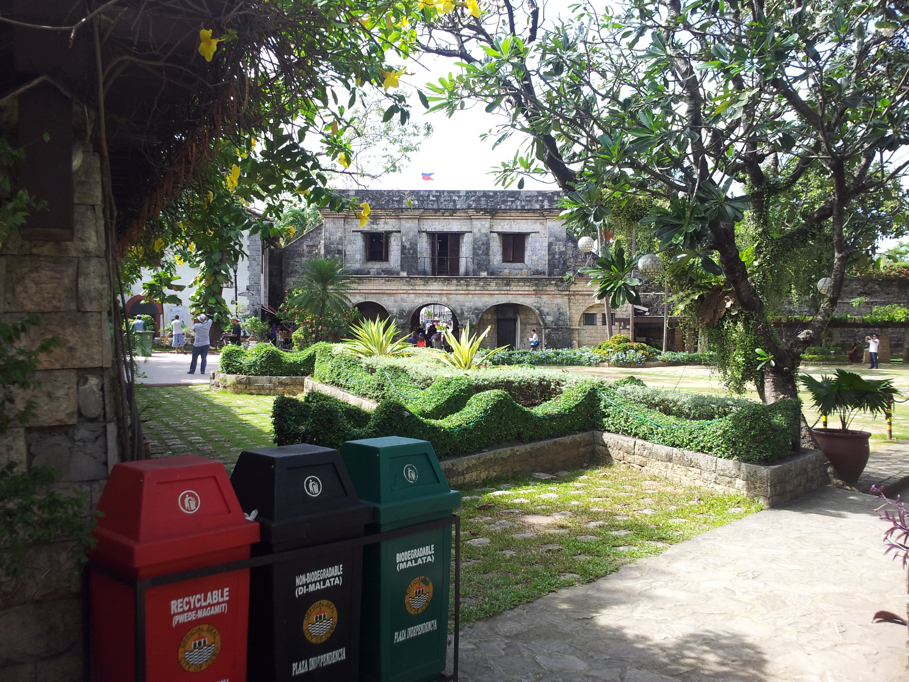
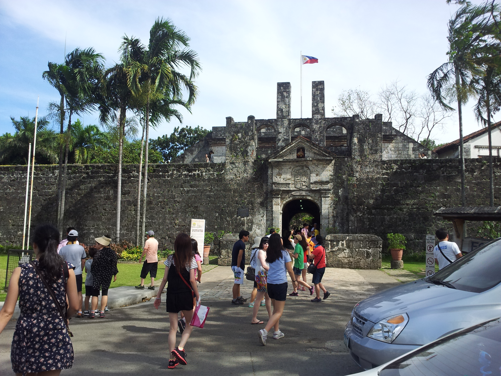
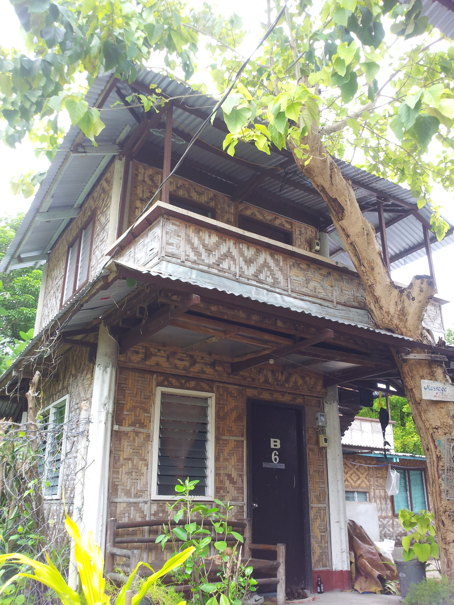
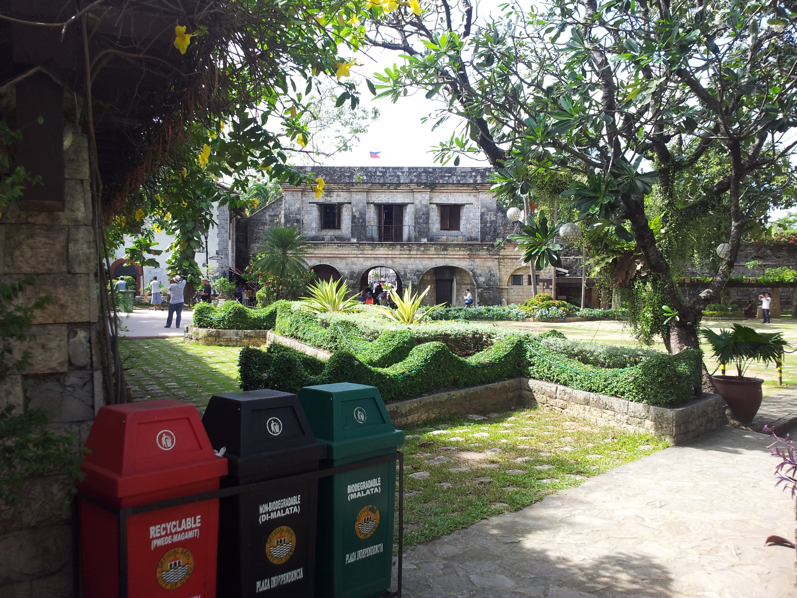
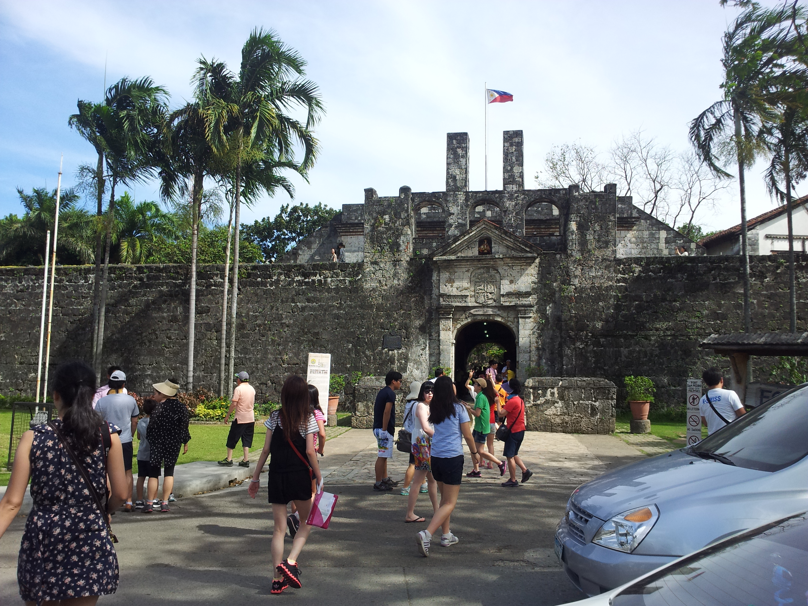
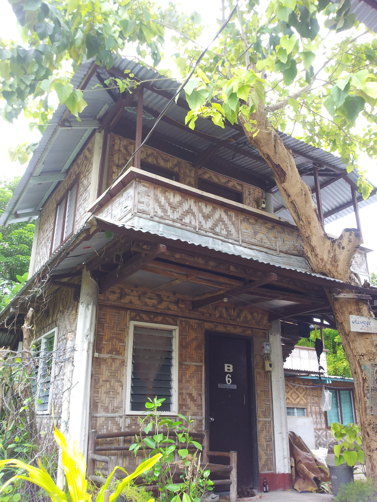

 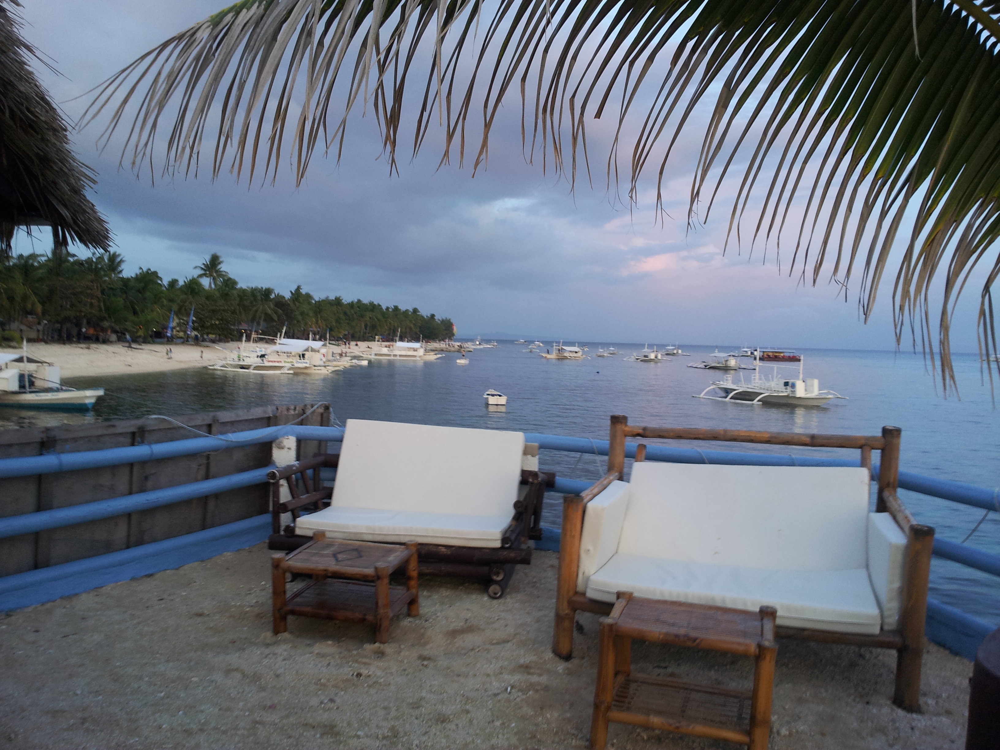
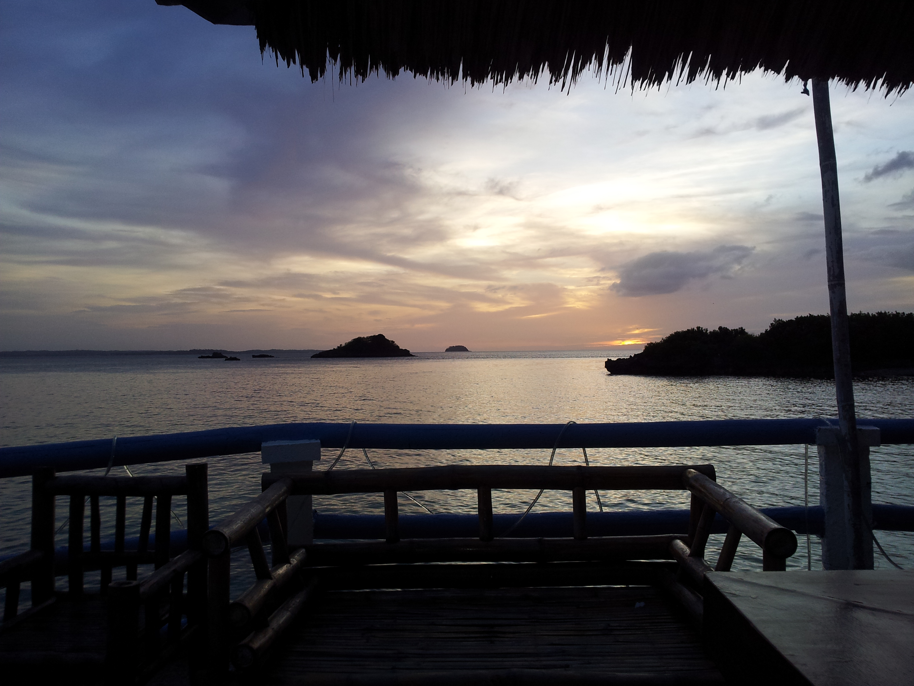
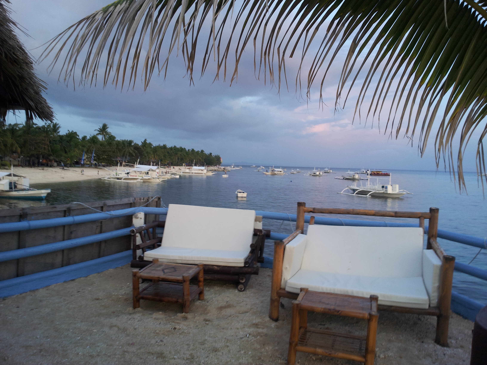
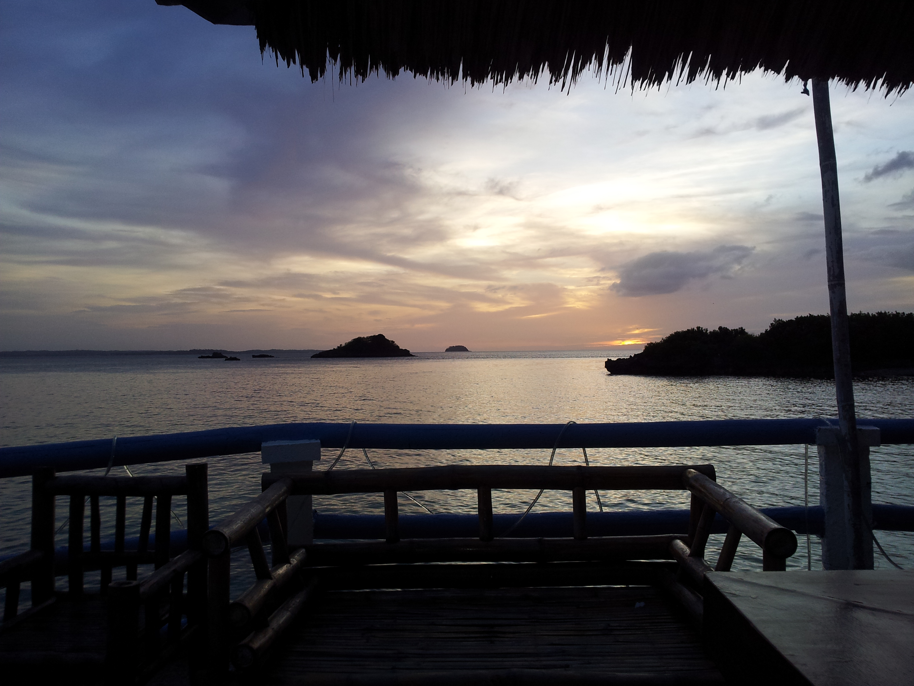


 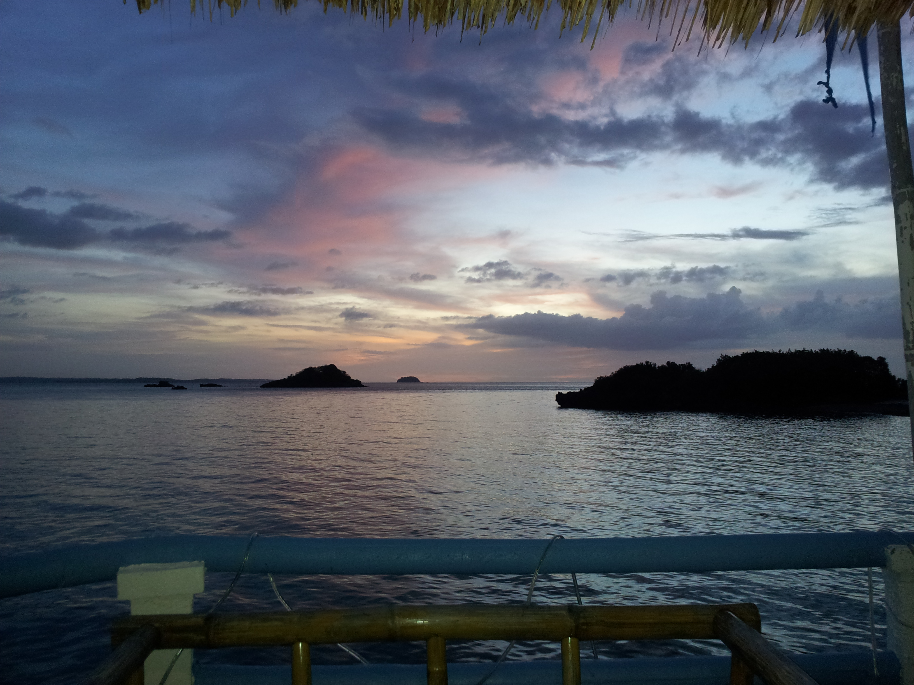
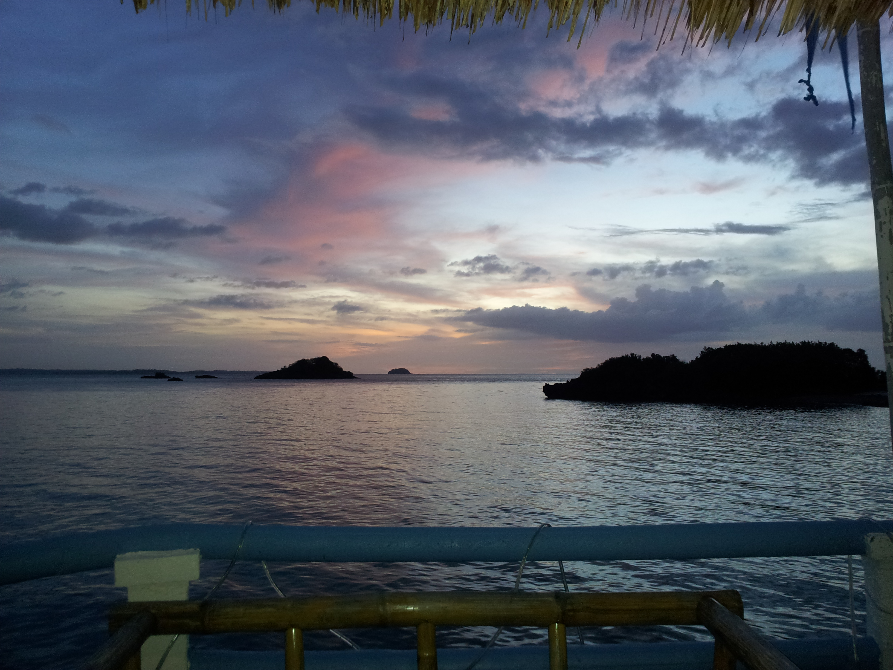